EcoARK Pavilion
Overview
Spring 2021 | 3 Months | Sustainability
Have you ever seen a building made from 100% recycled plastics? Have you ever thought you could also contribute to the construction of green buildings? Here it is. EcoARK pavilion is an architectural feat made from 1.5 million plastic bottles to promote environmental awareness. This plastic architecture turns the plastic pollution problem into an eco-friendly opportunity by turning the waste into the material as well as conducting a plastic-recycling campaign.
Although people know about the severity of plastic pollution, they don’t know what they can do to stop it. Thus, this project is going to create a brand identity for the EcoARK, advertising it as not only an eco-friendly place but also Instagram and recycling-friendly place in order to give an educational interactive experience for visitors.
01. Problems
Every year more than 300 tons of plastics are produced and the demand for plastic has drastically increased. However, the environment cannot address the disposal at a speed fast enough to fight the large consumption and prevent harm to living beings.
EcoARK re-engineers plastics to POLLI-Brick, with interlocking grooves so it can be taken apart and reassembled, like a giant LEGO building. With zero carbon footprint and masterful use of bottles, it truly achieves the idea of “Reduce, Reuse, and Recycle”.
02. Research
Plastic Waste Infographics
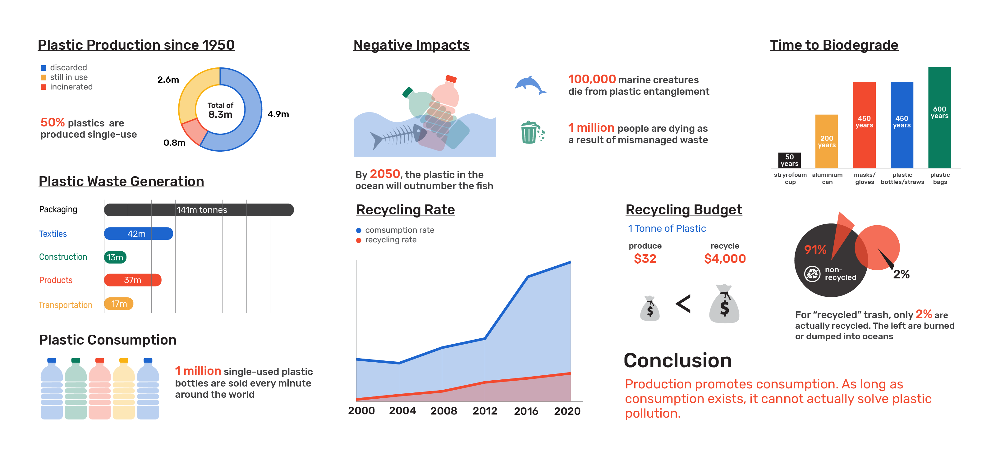Mindmap
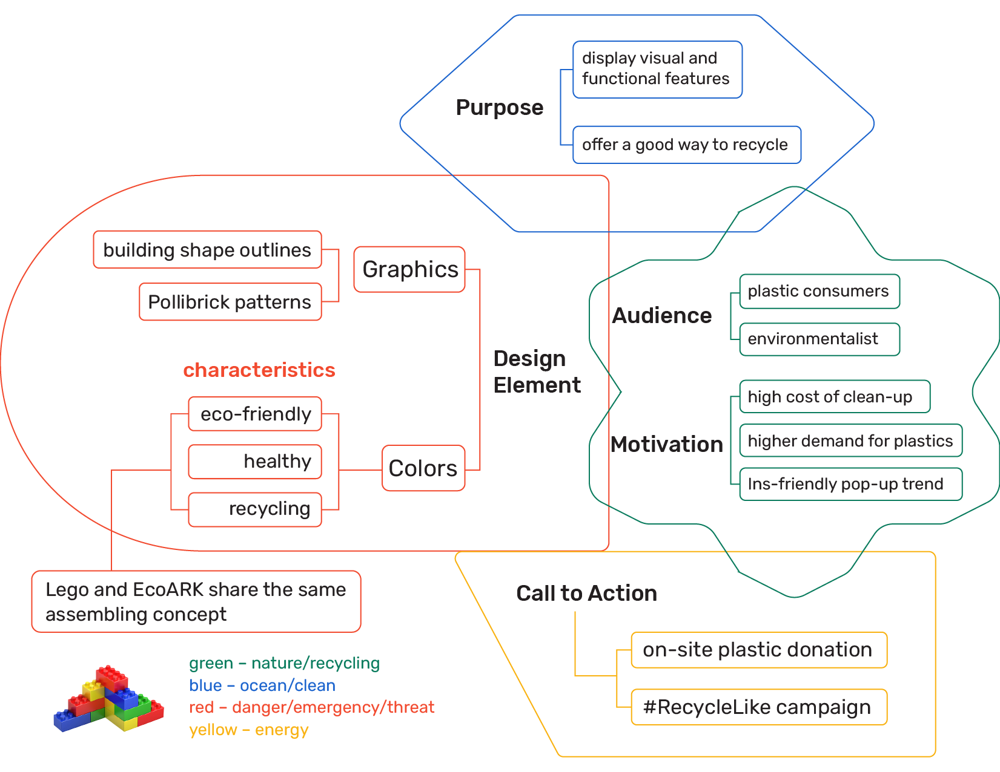Sketches
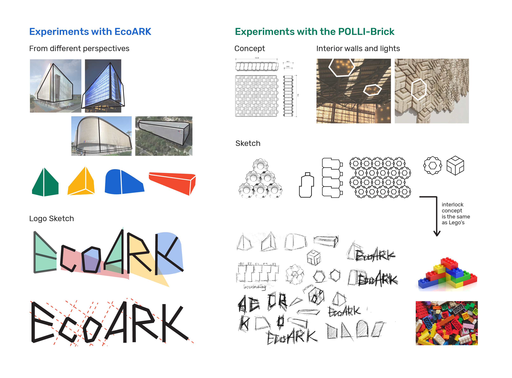03. Moodboard

04. Visual Identities
Color Schemes
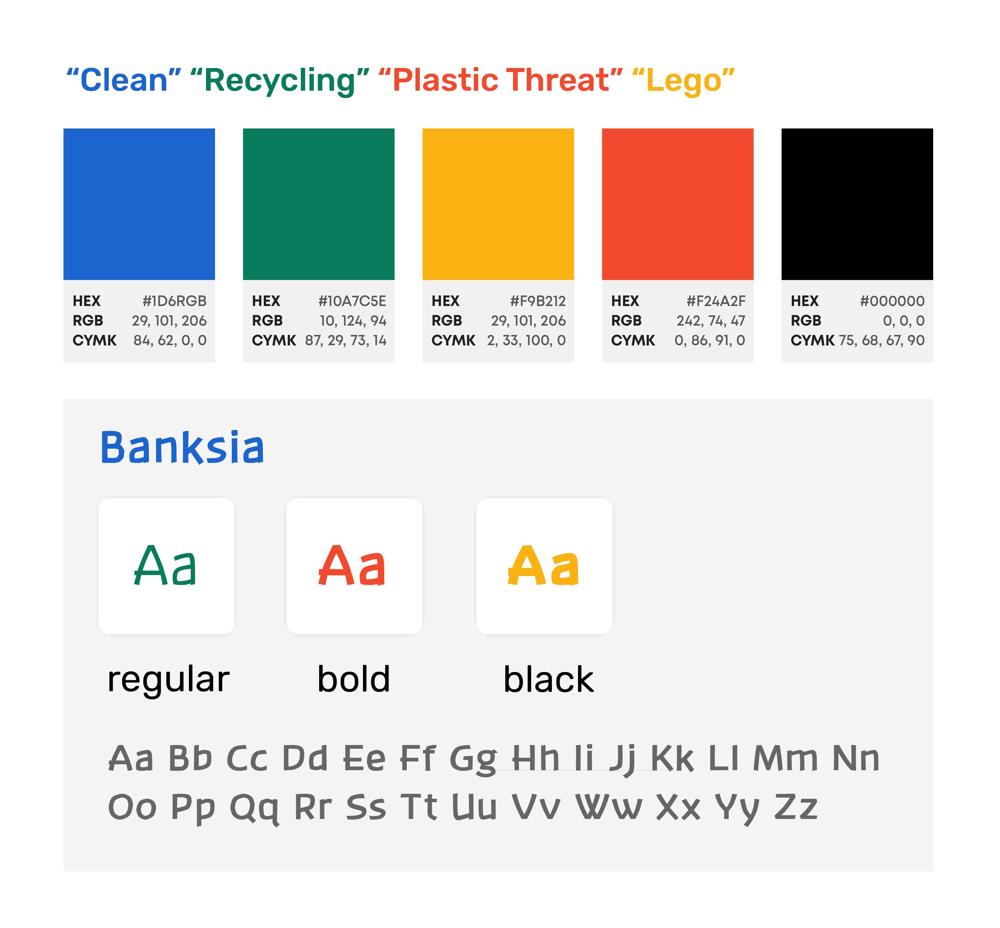Graphics
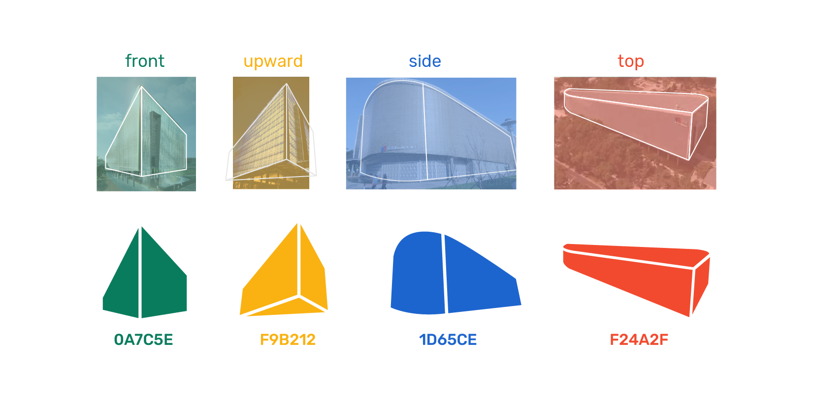 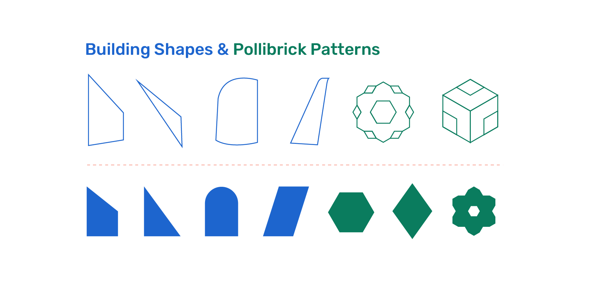Patterns
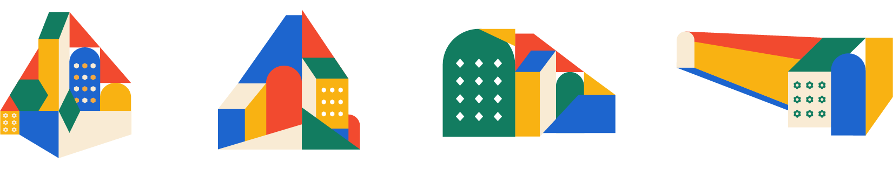Logo + Logotype
ELogo is created from the building shapes.
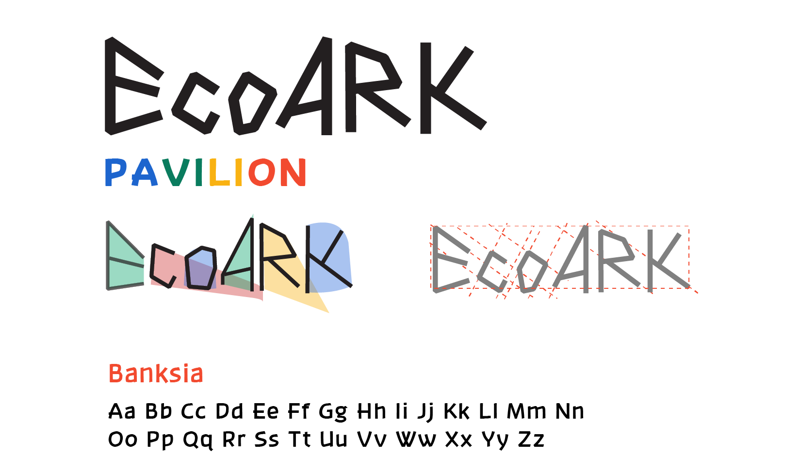Icons
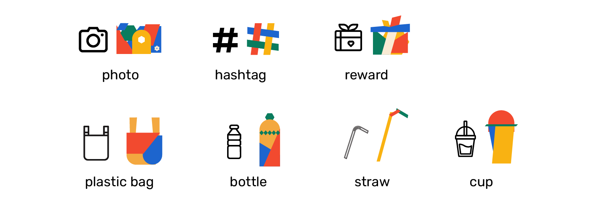Elements
Most EcoARK images are in low resolution, so I used graphics to recreate these low-pixel images.
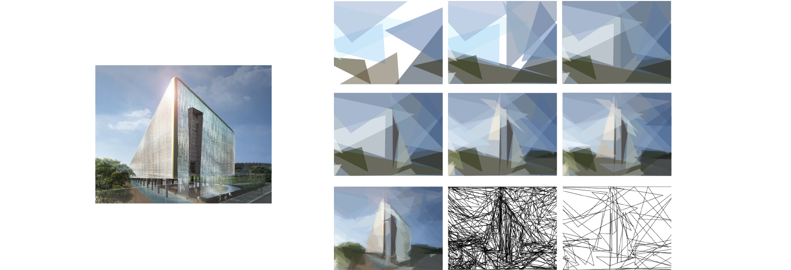05. Pavilion Deliverables
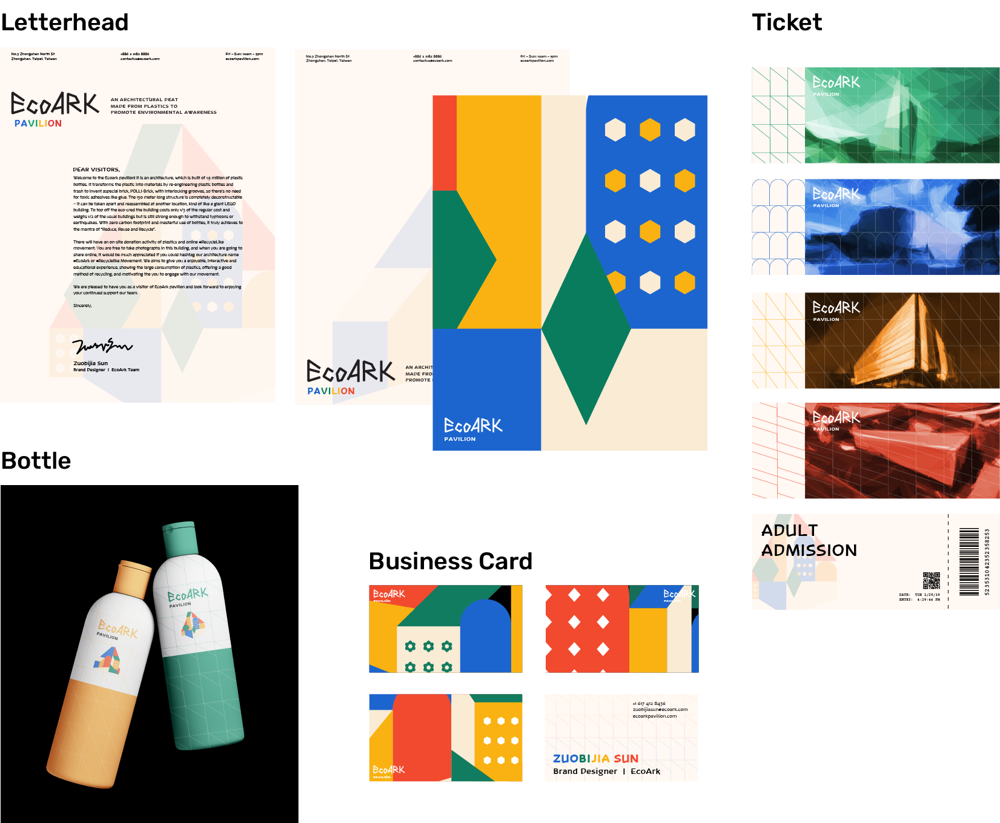 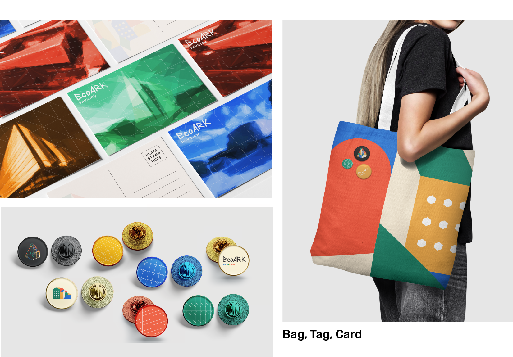
Brochures
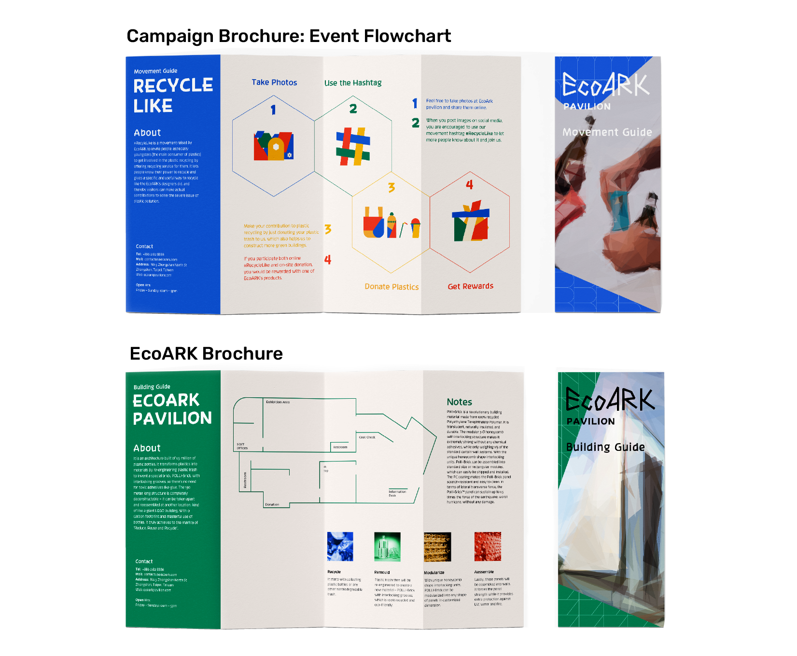06. Virtual Experience
Website + Social Media
When hovering on the “front” “side” “upward” “up”, corresponding graphics will become bigger, along with brief introductions about the building in that perspective and pollibrick.
When clicking on the underlined #RecycleLike, there will be the campaign page with instagram feeds posted by other participants to help visitors knowing about it.
07. Posters
Building
Building Posters will be displayed outdoors.
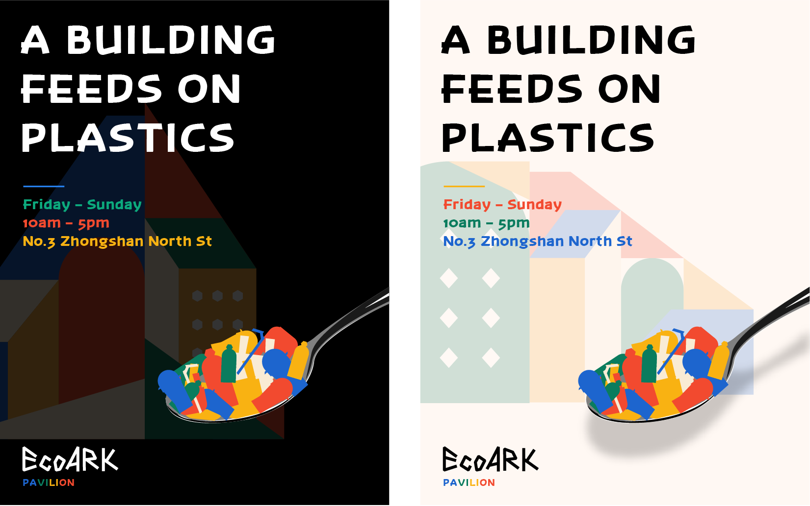Campaign
Campaign posters will be displayed indoors and targeted to visitors who have known about this building and activities. They will also get campaign brochures in hands when viewing campaign posters to get involved into it.
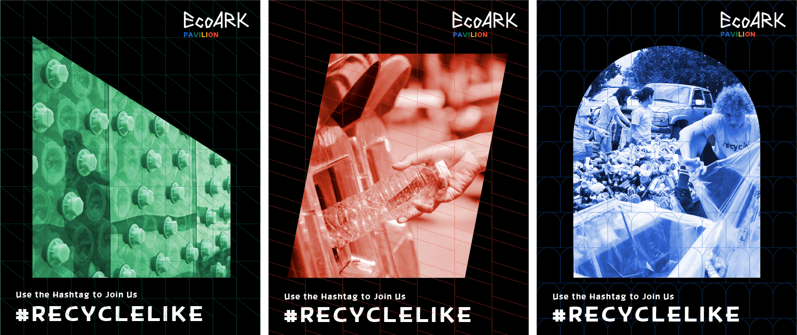 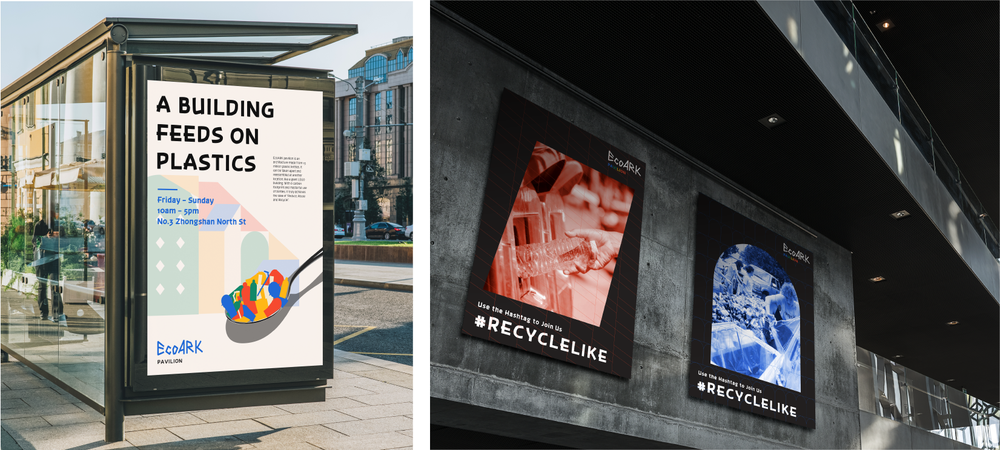